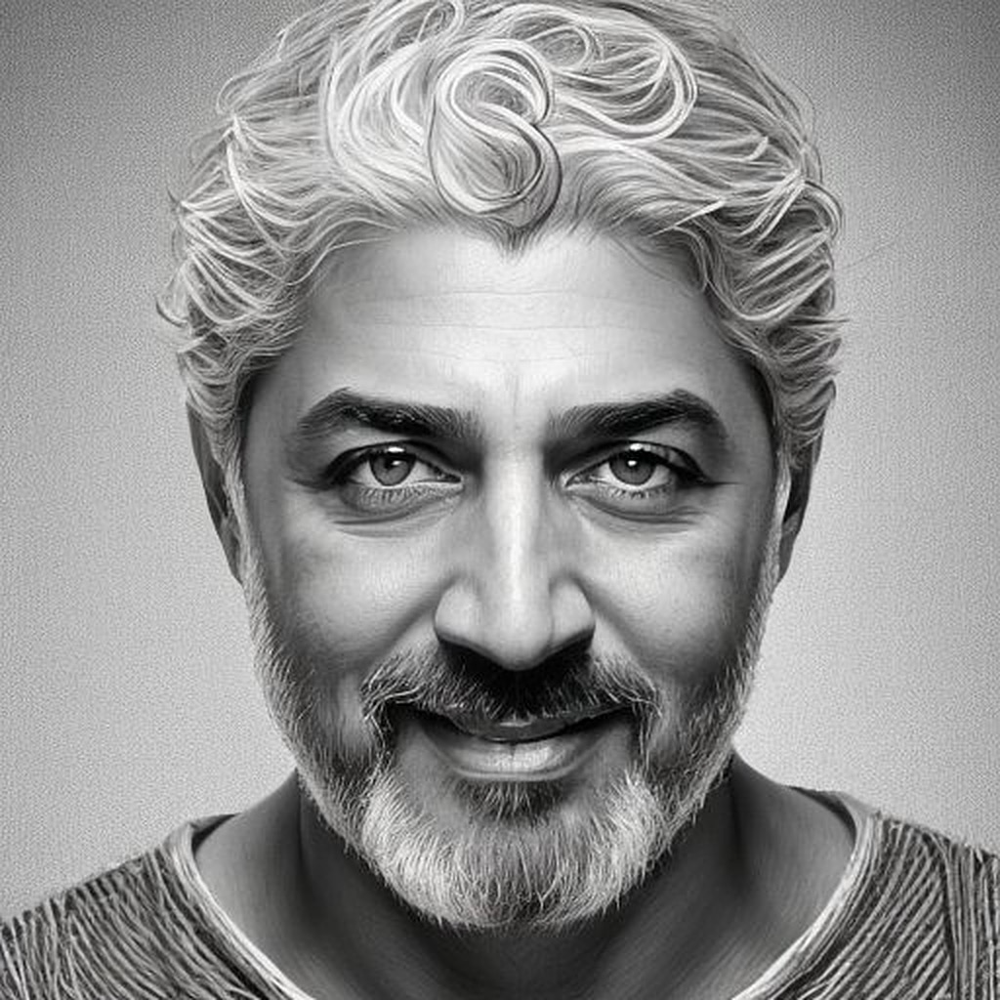
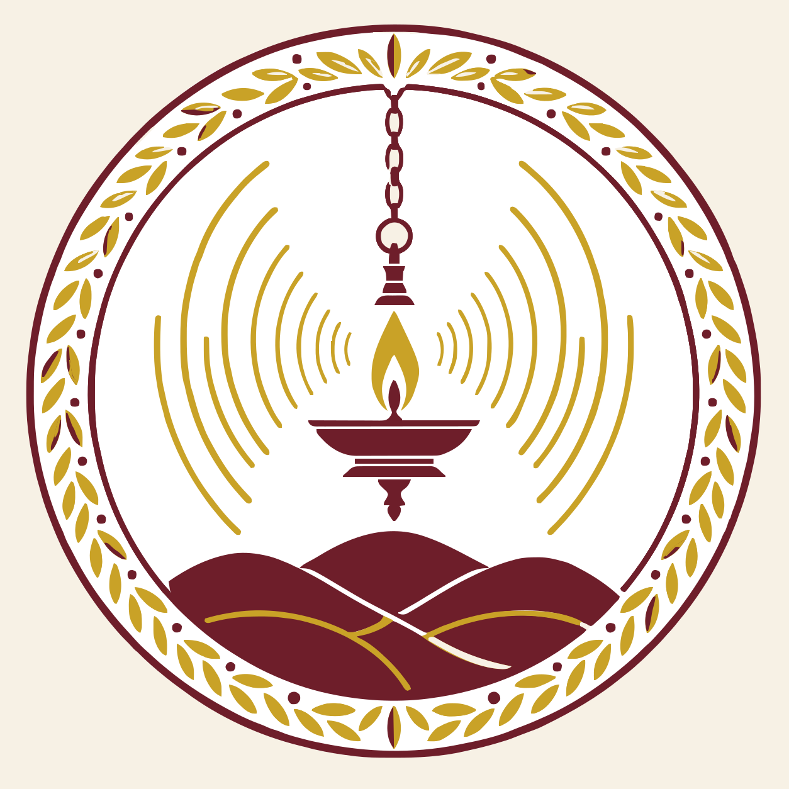
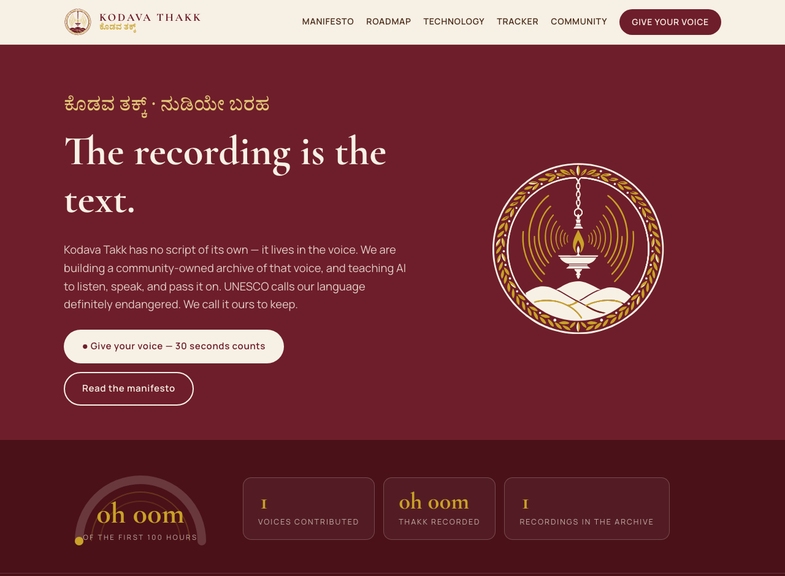

UNESCO lists Kodava Takk as definitely endangered. Around 1,14,000 of us still speak it — but fewer children answer their grandmothers in Thakk every year.
Our language has no script in daily use. It lives in stories, in Palame songs, in wedding blessings — in the voice.
Which means every unrecorded elder is a library we lose forever.
Audio first. We record the language the way it actually exists — elders, singers, families, in both dialects.
Community-owned. Every voice is held under a Kodava guardianship licence. Our data is never sold. Ever.
AI that speaks Thakk. The recordings teach open AI models to hear our language, speak it, and help our children converse in it.
The Māori built speech AI for te reo with 92% accuracy. Now it is Thakk's turn.

1 · Open kodavathakk.kodagu.ai/contribute
2 · Speak in Thakk — a story, a song, a proverb, a blessing
3 · Choose your consent — you own your voice, always
4 · Watch the dial move, credited to your name and okka
Sit with an elder and record the long version.
That is an heirloom.